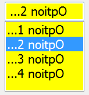
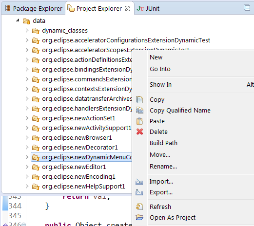
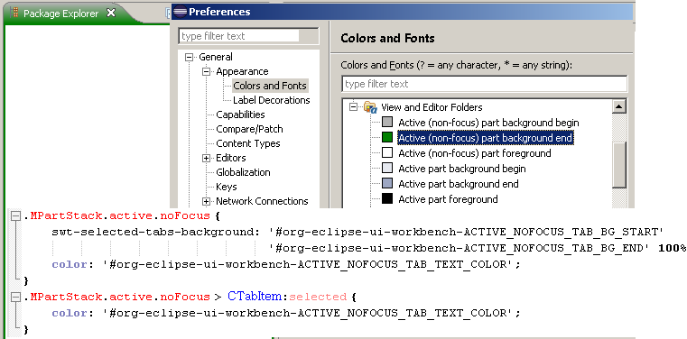
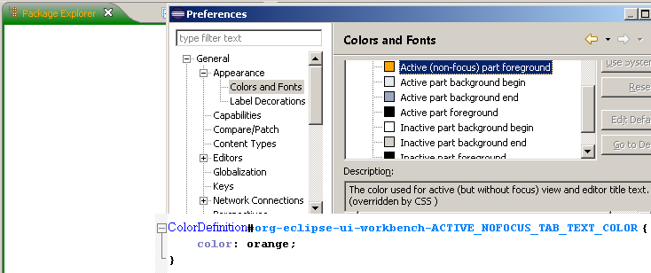
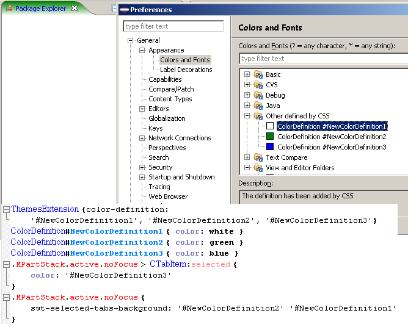
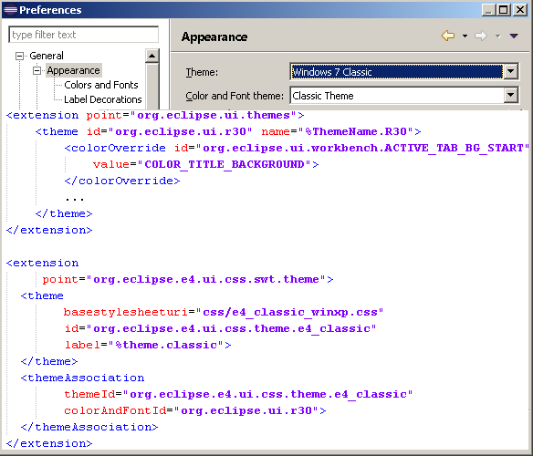

- -protect root can be used to prevent Eclipse from being started as a root user, either directly or via programs that run with administrative privileges like 'sudo'. This option is currently implemented only on Linux/UNIX based platforms.
- -protect master can be used to prevent starting of the master instance in a shared install configuration. This option can be used on all platforms supported by Eclipse.
The above options can either be set in the launcher's .ini file or can be used directly from the command line (e.g eclipse -protect root). See bug 379102 for more details.


org.eclipse.debug.examples.mixedmode project demonstrates
how to use Debug's mixed-mode launching support. The org.eclipse.debug.examples.memory project provides sample content to display
in the Memory and Registers views.

- Ctrl+_ splits the editor one above the other
- Ctrl+{ splits the editor side by side
- Re-applying the command to an already split editor reverts it to only have one pane.

Try it out on your favorite editor!
- Use Overlays: This is the current mode where showing a view in a minimized stack opens it in a 'fly out', overlaying part of the presentation.
- Show in the Original Location: This is a new mode that will temporarily put the stack back into the perspective layout while one of its views is active. This has the advantage that the minimized view won't overlay anything in the current presentation (e.g. your editor...).
In order to access the new mode, right-click on the Restore button of a minimized stack and select the Show in the Original Location menu item (see image below). Note that this change is global, so once it's set, all minimized stacks will use the selected mode.

Here's what the current mode looks like:

Here's what the new mode looks like. Note how the editor has been pushed to the right rather than being obscured:

We're really interested in your feedback on this! The initial response has been positive enough that we're considering making the non-overlay mode the default. What do you think? (Post your comments on bug 426556).
Combo widget now supports the same SegmentListener API as Text.
This allows an application to specify
segment boundaries and Unicode Control Characters to use in the segment boundaries.
Snippet332 shows how to accomplish RTL override in a Combo.

JFace clients can use BidiUtils#applyBidiProcessing(...) to set pre-defined text types.
A new dark CSS theme based on a community contribution has been added. This popular community theme demonstrates the capabilities of the current CSS styling. This new theme helps the Platform team to continue to improve these capabilities.
The platform also supports that projects can extend existing themes like the dark theme with settings for fitting syntax coloring. Several editors, i.e., the Java, C/C++ and Lua editor, already contribute styling for the dark theme. See bug 433475 for details.

.project file and whose related project
isn't already in the workspace now shows an Open As Project context menu entry that imports the folder
as existing project into the workspace.


Existing workspaces that use the "Always launch the previously launched application" option are not affected by this change.
-
Using the Color and FontDefinitions in the CSS style sheet:

-
Overriding of the definitions in the CSS style sheet:

-
Adding the new definitions with the CSS style sheet:

After switching the 3.x theme they are re-merged with the new theme.
The new definitions added with the CSS file (the last use case) are available in the CSS theme that provides it.
After switching the CSS theme the definitions can be unavailable in the theme registries when the new theme doesn't re-define it. So using such definitions out of the CSS files, we have to be prepared for such situation and use proper default values in the case when some definitions are missing.


SWT.MOZILLA can now be used with the XULRunner 24.x runtime.
- 2 for GTK+ 2.x
- 3 for GTK+ 3.x
Note that setting the GTK+ version via this parameter takes precedence over setting the SWT_GTK3 environment variable. See bug 434619 for more details.